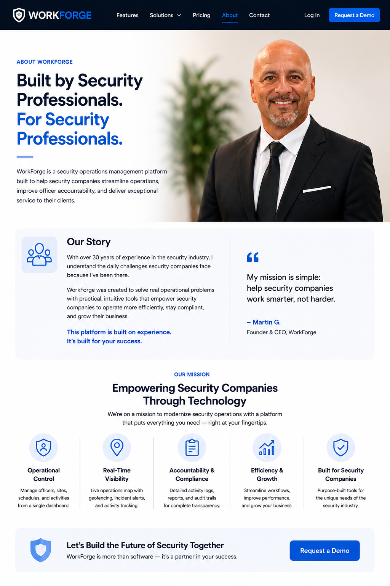

WorkForge is a security operations management platform built specifically for contract security companies. The platform helps security firms manage officers, sites, incidents, deployments, geofencing, reporting, and operational oversight from a single dashboard.
Our goal is simple: help security companies improve accountability, streamline operations, and deliver exceptional service to their clients.
We believe security professionals deserve software designed around the way security operations actually work.
WorkForge was created to replace disconnected spreadsheets, manual reporting processes, and fragmented communication with a modern, centralized platform.
Through real-time visibility, GPS geofencing, incident management, deployment tracking, and operational reporting, WorkForge helps security companies work smarter, reduce risk, and grow with confidence.
Martin Garret
Founder & CEO
33-Year Law Enforcement Veteran
Martin Garret founded WorkForge after a 33-year career in law enforcement. Throughout his career, he witnessed firsthand the importance of accountability, communication, incident documentation, operational oversight, and real-time situational awareness.
Drawing on decades of experience managing complex situations, personnel, investigations, and field operations, Martin created WorkForge to help security companies modernize their operations through technology.
Today, WorkForge provides security organizations with tools for officer management, site oversight, incident reporting, geofencing, deployments, and operational visibility—all from a single platform.